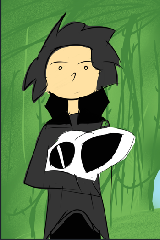

Ihor HaxiDenti Fox #

Хто такий #
HaxiDentiв реальному житті називаєтьсяІгор.- В кругу друзів, знайомих, та рідних відомий як
Ihor Fox - Програміст, розробник програмного забеспечення для
Backendна мові програмуванняJava/Kotlin - Пише як хоббі - розповіді на вільній основі для себе, друзів, і вирішив попробувати на ширшу авдиторію
- Паралельно займається розробкою програм для створення новел, інтерактивних квестів, і таке інше, що сприяє творчості інших людей.
Background #
- Народився на Львівщині у маленькому селі у Бідній сім’ї.
- За походженням Українець
- Лінія батька походить з Росії, а по Лінії матері з Європейських країн
- Напівсирота, батько покинув сім’ю, коли було 8 років
- Хворів п’ять разів на пневмномію, та був присмерті два рази
- Пообіцяв мамі що кимось стане коли виросте
- Виріс в малозабеспеченій сім’ї, на шиї дідуся та бабусі
- Вчився у академії для сиріт та бідних сімей
Hebron IT
Як прийшов до Монни? #
- З першого класу писав вірші, та хотів написати перше оповідання.
- Був улюбленцем (або не дуже) вчителів Української мови завдяки старанності в предметі
- Незважаючи на Українську мову, писав перші оповідання на Російській, вважаючи її доступнішою для Українців та людей за кордоном.
- Перше оповідання було
Хістерія, що прославилась в кругу любителів подібного жанру. Це була розповідь про так-званого Інеса та його білу дракончиху, з якою вони собі жили на Варитському острові.- Твір був Фанфиком до Мультфільму “Як приборкати дракона” (Перша частина)
- В оповіданні розказувалась історія про кволого хлопця, що хворів якоюсь хворобою, і перед смертею відпустив дракончиху наволю
- Проте драконесса не втекла, а врятувала його певним чином, а потім і викрала його
- Твір став дуже популярним, і за тиждні набрав десь з 10 тисяч переглядів.
- Нажаль мав популярність з-поміж 10-12 річних дітей, однак це теж було щось.
- Даний твір було видалено (Крінж :) )
- Наступною “Гістерією” були ще декілька фанфиків.
- “Німфі Хісті” - Вперше згадувалась така собі Німферія, як персонаж, та її подруга Тіффія. Надихнувся грою Діна Додріла
Dust an Elysian Taleде головним персонажем виступав вовк Фуррі, та його маленький друг Німбат Фіджет. Криклива зараза, в яку неможливо не закохатись. Тіффі же була копія Німфі, тільки іншого, фіолетового кольору. Нічні ЗіркитаПоліт в нічному небі- Вперше згадується Алдія Найтстар. Оповідання було написано в передноворічну ніч, і викладено десь на новий рік в 2013 році. Метою такого оповідання було привітати читачів з Новим роком. Розповідалось про нещасну Фенек лисичку, що блукала на пляжі острову, і молилась Тіні (Місяцю, на який вона думала, що це її мама). В якийсь момент, місяць пустив промені на Алді, і забрав її. Твір вийшов дуже сумний, і знову таки людям сподобався.- Ніколи б не думав, що Алдія пізніше зможе мені поміняти життя.
- “Німфі Хісті” - Вперше згадувалась така собі Німферія, як персонаж, та її подруга Тіффія. Надихнувся грою Діна Додріла
- Пізніше надихався творінням художниці Вів’єн Медрано, вона ж на даний момент творець “Пекельного Боса” та “Готель Газбін”
- В 2016 році, Віві’єн випускає комікс, що називається “Зоофобія”. Історія про якесь підземне місто у склі, де живуть демони та тварини, й переховуються від світу людей.
- Головний персонаж Кемерон, хвора на голову персонажиня, консультується з лікарем, що рекомендує їй змінити офісну роботу, на іншу
- Після цього, вона шукає іншу роботу, і знаходить дивну вакансію, по догляду за тваринами. І так, як вона любить тваринок, вона хотіла б туди потрапити.
- Відповідно її приймають, але жінка, що приймала її, насправді була якоюсь феєю, і коли Кемерон летіла в літаку, то вона тільки тоді почала розуміти, що людей навколо нема, а за бортом літає якась перната тварюка.
- І в цілому вона приземляється, і потрапляє у світ, де всі звірі, і не тільки. Вона всього боїться, і відповідно так і починається розповідь.
- В свій час я надихнувся цією історією, і написав відповідний план, що називався
Одді Міллер - Хранителі Ангори. В планах було придумати щось подібне, але про Ангелів та Демонів, з головним персонажем в ролі Екзорциста.
- На третьому курсі училища, створив був ідею, для написання книги про Марс, та в подібному плані, що було про Ангелів та Демонів.
Eneopsis - The Mars Project- По факту головний персонаж Немесі Авілія, що збирала зап частини зондів, та роботів на червоній планеті.
- Коли вчені дізнались про існування життя на марсі, вони одразу почали будувати колонії, та виловлювати створінь, для того, аби проводити дослідження
- Авілія знайомиться з роботом, Б1 що слугував штучним інтелектом та збирачем. Він приносив всякий брухт до бази, але його покинули. Авілія принесла його до перевалу, й відремонтувала.
- Відтоді вони стали друзями
- По сюжету Батько Авілії Рандер, каже що вибиратись до людей, та таскати всяке з їх лігва, це самогубство. Авілія спочатку в таке не вірить, аж поки не потрапляє у пастку
- Перебуваючи на навчанні у Академії
Hebron IT, прийшла в голову написати ще одну книгу (В цей раз не план). Називалась вона “Новий Світ”, або ще “Digital World”.- Була ідея запхати Німфі, Алдію, та решту персонажів у якийсь віртуальний світ, де все б нагадувало гру, але при тому можна було в неї потрапити, й вибратись
- Вона була посиланням на реальну гру, яку я хотів зробити, практикуючись в знаннях
phpмови (Майже першої мови програмування, післяBasic). Я хотів написати свою першу гру, де буде відкритий світ, і повна воля дій. Однак навичок не вистачило на той час. - Це був віртуальний світ, насичений віртуальними звірятами, при вбивстві яких випадали “Світлячки” або якась інформація, з якої можна було створити ще щось, або перетворити на фрагменти і творити нові виміри. Концепт полягав в тому, що душа була цифровим ядром, яке треба було вибити, і воно після смерті, коли хижак поїдав плоть, поверталось у якусь квітку, і з часом, звіря могло відродитись.
- Ідея нікому не зайшла, того я відкинув. Також пізніше керівник прочитав цю “книжку”, і сказав що таке не годиться, і не пасує аби студенти таким займались, так як Академія про Бога, і про віруючих. А ця книга, по мірках власника Академії була “проти Бога”. Він попіклувався аби я зростав з Богом, а не писав віршики та книжки про те, чого не існує. Так ідея вмерла не народившись. Проте було кілька артів, де згадувались три персонажі:
- Кірбі, Алдія, та Сильвія
- Ось вже на дворі 2018 рік, і я вступаю на свою першу роботу
Java Trainee Developer, де починаю вникати в світ розробки, на такій мові, якjava. В мою голову приходить створити гру знову по тому світу, але на той час подібна гра з такою-ж назвою існувала. Того я не спішив писати книгу з такою назвою. Ба більше, існувала навіть “Хістерія” як рок група (здається), від чого я теж не міг називати книгу так.- У вихідний час, я бавився з
javascript es5, де практикував написання першого міні движка для створення лінійних новелMyStory(Хз, як ще його можна було назвати, в той момент принаймні) - На цьому “движку” я був написав першу лінійну новелу, яка називалась “Останній Хранитель” і була про Алді Найтстар. Саме там у неї появився сюжет, та були якісь початки. Історія була на сторінці ВК, того це все загубилось з часом.
- Однак малюючи не першого персонажа, в один момент мені прийшла в голову ідея, назвати Гістерію, “трішки інакше”. Наприклад вигаданою мовою, якою спілкуються Астеріонці (Ті самі персонажі). Хм… Я подумав що буде непогано.
- В той момент виходить назва “Histea”. Але звучить воно якось таке собі. Воно мало б означати Хістерія, однак аби “Паливно” не було. Але в Астеріонській мові, дівчина називається “Monna”, а так як перша дракончиха білого коліру називалась Хістерія, і вона була дівчиною, я вирішив дати відповідну назву.
- На світ появилась назва “Monna Histea”
- Ідея була створити світ, де всі ті персонажі об’єднались в одному світі, і взаємодіяли.
- Перша версія такої “Монни” вийшла під назвою “Велика Історія”, або Legia Spelia. Це був збірник фанфиків на сайті ficbook.net (Новый мир - Все ще зберігся на сайті, того можна знайти).
- Туди входили “Хістерія”, “Хістерія 2”, “Хістерія 3”, “Німфі Хісті”, “Нічні Зірки”, “Останній Хранитель”, та “Останній подих” про апокаліпсис та “останні серії” наших персонажів. Йой яка ж у мене тоді фантазія була.
- Пізніше “Monna Histea” була переписана більше десяти разів, і постійно мінялась. Аж поки не дійшов до якогось консенсусу, де скажу “Ось воно”. Від тоді пройшло ще 5 років, і ось вже 2024 рік. І даний Блог ведеться починаючи з теперішньої дати.
- У вихідний час, я бавився з
Сни? #
- Так. В якийсь момент персонажі приходили до мене уві сні.
- Деяких персонажів, що приходили, я не знав, однак вони розказували мені про себе, того пізніше я їх додавав